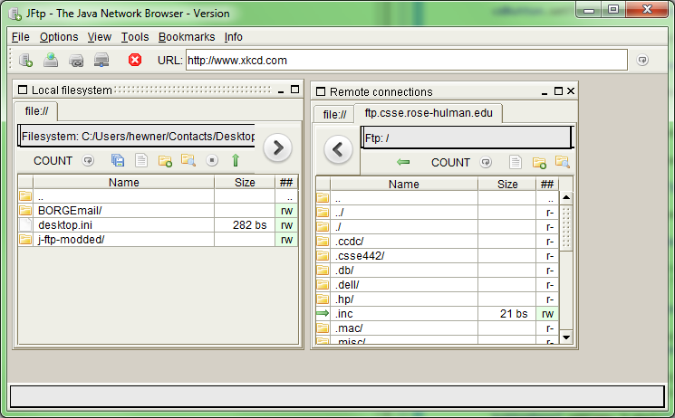
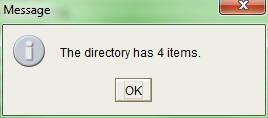

CSSE 375 Final Spring 2015
Table of Contents
1 Introduction
This final uses the jftp software project. It should already be in your SVN. Please use the SVN version and not the one from sourceforge - the code is similar but the source has been slightly modified to make building easier.
2 Warning
This is a final exam. Please do not get or give outside help.
3 The Goal
Jftp is a software project designed to allow file transfers between local systems and remote repos. We want to add an additional feature that counts the number of files in either remote or local directories.

Note the two buttons labeled COUNT (one in each directory window)

When the COUNT button is pressed, it brings up a dialog displaying the number of items in the directory (4, including the ".." directory, for the example window on the left).
4 Getting the Code Building
You should be able to run the JFtp application in the eclipse project with no additional work beyond selecting Java Application on run and choosing JFtp off the list.
If that does not work, try updating your eclipse.
If that still does not work, visit me as soon as possible to get it worked out.
5 Refactoring (6/15 points)
The code for jFTP is actually quite bad, so I won't request that you refactor the whole system. Instead, take a look at the function gui_init() in these two classes:
[src/java/net/sf/jftp/gui/base/RemoteDir.java] [src/java/net/sf/jftp/gui/base/LocalDir.java]
You should see that this function has a large amount of duplication between these two classes, but there are also some differences.
The function has several parts, in this assignment we will focus on the code that creates/populates the buttonPanel. This is the part of the code we want to add to because the buttonPanel is where we want the new COUNT buttons to appear. One sample from LocalDir is provided here so you know the section I mean:
deleteButton = new HImageButton(Settings.deleteImage, deleteString, "Delete selected", this); deleteButton.setToolTipText("Delete selected"); mkdirButton = new HImageButton(Settings.mkdirImage, mkdirString, "Create a new directory", this); mkdirButton.setToolTipText("Create directory"); refreshButton = new HImageButton(Settings.refreshImage, refreshString, "Refresh current directory", this); refreshButton.setToolTipText("Refresh directory"); refreshButton.setRolloverIcon(new ImageIcon(HImage.getImage(this, Settings.refreshImage2))); refreshButton.setRolloverEnabled(true); cdButton = new HImageButton(Settings.cdImage, cdString, "Change directory", this); cdButton.setToolTipText("Change directory"); uploadButton = new HImageButton(Settings.uploadImage, uploadString, "Upload selected", this); uploadButton.setToolTipText("Upload selected"); //uploadButton.setBackground(new Color(192,192,192)); zipButton = new HImageButton(Settings.zipFileImage, zipString, "Add selected to new zip file", this); zipButton.setToolTipText("Create zip"); cpButton = new HImageButton(Settings.copyImage, cpString, "Copy selected files to another local dir", this); cpButton.setToolTipText("Local copy selected"); rnButton = new HImageButton(Settings.textFileImage, rnString, "Rename selected file or directory", this); rnButton.setToolTipText("Rename selected"); cdUpButton = new HImageButton(Settings.cdUpImage, cdUpString, "Go to Parent Directory", this); cdUpButton.setToolTipText("Go to Parent Directory"); label.setText("Filesystem: " + StringUtils.cutPath(path)); label.setSize(getSize().width - 10, 24); currDirPanel.add(label); currDirPanel.setSize(getSize().width - 10, 32); label.setSize(getSize().width - 20, 24); p.setLayout(new BorderLayout()); p.add("North", currDirPanel); buttonPanel.add(sorter); buttonPanel.add(new JLabel(" ")); buttonPanel.add(refreshButton); buttonPanel.add(new JLabel(" ")); buttonPanel.add(cpButton); buttonPanel.add(rnButton); buttonPanel.add(mkdirButton); buttonPanel.add(cdButton); buttonPanel.add(deleteButton); buttonPanel.add(cdUpButton); buttonPanel.add(new JLabel(" ")); buttonPanel.add(zipButton); buttonPanel.add(new JLabel(" ")); buttonPanel.setVisible(true); buttonPanel.setSize(getSize().width - 10, 32);
Refactor the code to remove the duplication between the buttonPanel code in both classes. You may improve the function in any way you wish - including creating new functions, classes, etc.
I will be evaluating the quality of the resultant code. I will especially be looking for duplication, be it in the 2 existing classes, any of their superclasses, or any classes you create.
You do not need to write tests to accomplish this refactoring, but if you like feel free to write some automated buttonpanel tests. The GUI should continue to function exactly as it does now however. If you introduce changes, I will subtract significant points.
6 Adding the COUNT Button (3/15)
You can do this part 2nd, or program in a test-first style and implement the unit test before implementing the feature.
Add the feature, as depicted in the screen shots above.
It should be possible to add your feature with very little code duplication between LocalDir and RemoteDir, especially now that that your refactoring of init_gui is done. You do not need to refactor everything that's wrong with LocalDir/RemoteDir to get full credit, but your change should itself be nice.
7 Tests (6/15 points)
We want to test the COUNT feature we are adding for BOTH LocalDir and RemoteDir. Put your tests in the package "yourTestsHere".
Here on the constraints on your tests:
- You must not have your tests rely on either a particular webserver (e.g. ftp.csse.rose-hulman.edu) OR the local filesystem. Instead, you need to create a fake connection with non-real files and test your remote and local dirs with that.
- You must create both LocalDir and RemoteDir in your tests (or maybe a test specific subclass of either of them).
- The code you test should be the actual code in those classes, not some copy of the code in your test-only classes.
- Avoid changing the codebase to allow for tests (the occasional extract method or extract interface is fine though).
- Your tests should test with several different directory sizes.
- Your tests should not bring up a visible GUI.
- You should not use any additional testing library (e.g. mocking) beyond JUnit.
- To test your feature, you can feel free to add a function like getDirLength() and test against that. Obviously, in the GUI you must use java to bring up a dialog but you don't need to test the dialog creation code.
8 Submitting
You'll submit your solution via SVN.
9 If you have questions or trouble, talk to me!
Via phone email or stop by my office!
If you want to leave a note with your solution, put in the source code in the unit test java file.